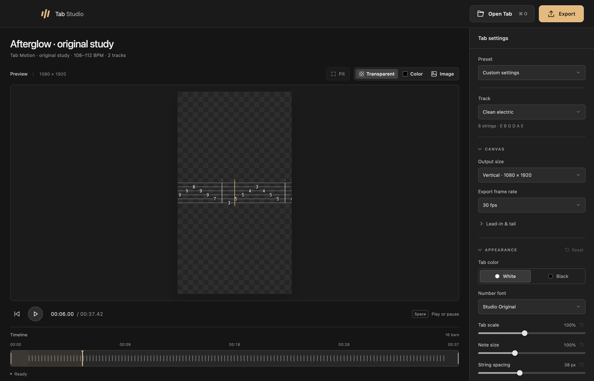

Scrolling tab videos from your Guitar Pro files.
Open a .gp file, choose the look, and Export a tab that scrolls under a fixed playhead, every note on its beat.
For Macs with Apple silicon

Specs
- Opens
- Guitar Pro files (.gp)
- Exports
- ProRes 4444 with transparency
PNG sequence with transparency
MP4 on a background color - Size
- Up to 4K, horizontal or vertical
- Frame rates
- 24, 25, 30, 50, 60 fps
- Timing
- Straight from the file: no audio, recording or syncing
- Look
- Number font, Tab color, Tab scale, note size, playhead, motion smoothing, background, presets
- Preview
- Shows exactly what exports
- Price
- 3 free exports at full quality with every feature, then a one-time purchase. No subscription.
- Requires
- A Mac with Apple silicon